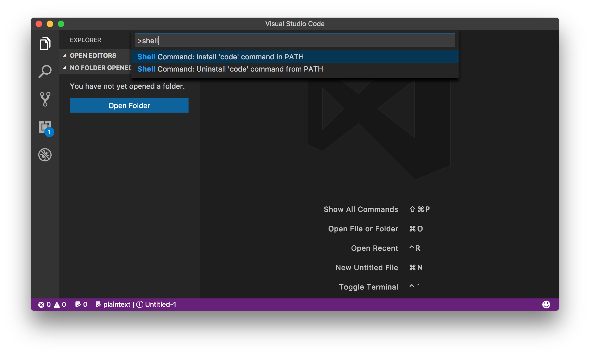

Development Environment
On this page, we will be talking about your development environment! First, you want to start getting REAL comfortable with your Command Line.
Command Line
Since I'm using a macbook, the shortcut that I use to open my terminal is:
- Use command + space to open spotlight search
- Then type "terminal" and it should open the terminal

Ima show you other things you could do once you open your command line

- cd is used to call up directories. as you can see, I used "~" which is a shortcut and so you don't have to type in your user name -- "/Users/julialau"
- ls is used to list the contents of a directory -- it displays the other folders and files.
- mkdir allows you to make a new directory -- I named the new folder in that directory as "new".
- touch is used to create a new file -- I named the new file as "index.html" and it's placed in the "milestones-html" directory.
- code . allows you to open this directory in VS code -- I had trouble doing this because I didn't have this command downloaded in VS code. So if you want to use this shortcut, check out the screenshot below!
